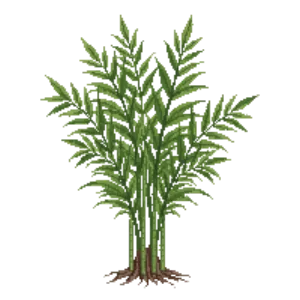

Fountain Bamboo (clumping)
Fargesia nitida

Fountain Bamboo (clumping) is a grass for structure, suited to full sun to partial shade and clay or loam, flowering varies by climate.
| Type | Grass |
|---|---|
| Mature height | 350 cm |
| Spread | 150 cm |
| Aspect | full sun to partial shade |
| Foliage | Evergreen |
| Hardiness | USDA 5a-8b, RHS H6 |
| Pollinator-friendly | No |
| Pet-safe | Yes |
Where to use it in a border
At around 350 cm, it sits best toward the back of a border, or on its own as a focal point with room around it. Give it about 150 cm of room to spread. It is hardy across USDA zones 5a to 8b and rated H6 by the RHS, so check it suits your area before planting.
It appears in our lists of shade, clay soil, evergreen plants, pet-safe plants.
Border Builder uses Fountain Bamboo (clumping)'s height, spread, soil, bloom months and companions to place it in a full border plan for your own conditions, on iPhone and iPad.
Flowering through the year
Worth knowing
- Evergreen, so it keeps the border furnished through winter.
- It tolerates a shaded, north-facing spot.
Good companions
Plants that share its conditions and style, chosen to complement its place in the border:
- Black mondo grassto edge in front
- Fatsia 'Spider's Web'to edge in front
- Heavenly Bambooto edge in front
- Hosta 'Halcyon'to edge in front
- Hydrangea 'Limelight'to edge in front
- Japanese Araliato edge in front